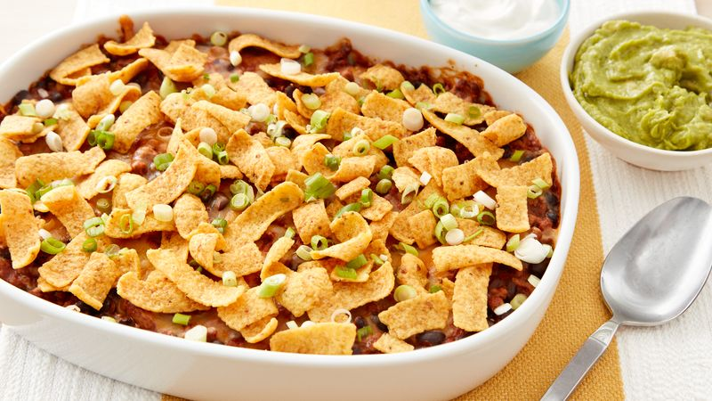

Frito Pie

A bowl of delicious frito pie.
Ingredients
- Beans
- Cheese
- Onion
- Ground Beef
- Tomatoes
- Chile Powder
- Taco Seasoning
- Tomatoe Sauce
- Corn Chips
Cooking steps
- Brown beef and season with a packet of taco seasoning. Stir in remaining filling ingredients.
- Layer Fritos, cheese, and the meat mixture in a casserole dish per the recipe below.
- Top with more cheese and bake until bubbly.
Serve and enjoy… and don’t forget the toppings!
>